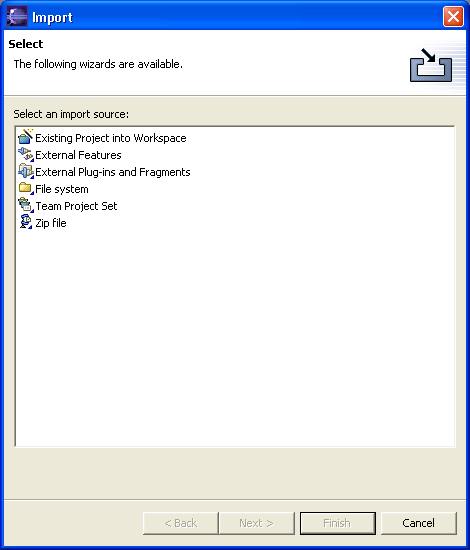
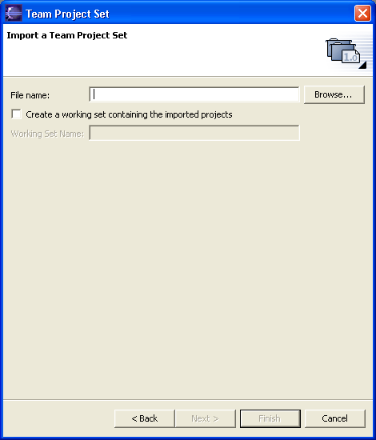

Using the Import wizard to load CougaarIDE Projects
This wizard helps you import all CougaarIDE resources into the Workbench.
1) Access it from the Eclipse Menu File->Import ...
When the Import wizard first comes up, you must choose what type of import to
do:

2) Select Team Project Set and press Next >
3) Browse to the project set file you downloaded.
Either:
Anonymous CVS Access or
Developer SSH CVS Access

4) All the CougaarIDE projects will be checked out into your workspace.